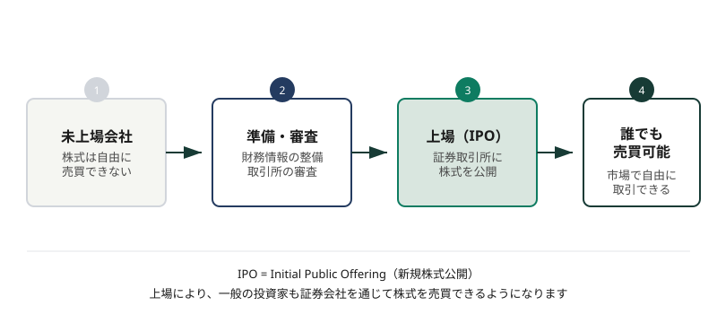

上場とIPO
このページで学ぶこと
- 上場とは何か
- IPO（新規株式公開）の仕組み
- 企業が上場する理由
- 上場企業と非上場企業の違い
- 東京証券取引所の市場区分
- 上場廃止とは
上場とは
上場とは、企業の株式を証券取引所で売買できるようにすることです。上場した企業の株式は、証券取引所を通じて不特定多数の投資家が売買できます。
上場していない企業（非上場企業）の株式は、基本的には市場で自由に売買できません。株式を売買するには、相対取引（当事者同士の直接交渉）が必要になります。
上場＝株式が「市場で取引できる状態」
上場することで、株式の流動性（売買のしやすさ）が大きく高まります。投資家は、証券会社を通じて上場企業の株式をいつでも売買できるようになります。
IPO（新規株式公開）
IPO（Initial Public Offering）は、新規株式公開のことです。企業が初めて株式を証券取引所に上場し、一般の投資家に株式を販売することを指します。
IPOの一般的な流れは以下のとおりです。
- 上場準備: 企業は証券会社（主幹事証券）とともに、上場に向けた体制整備を行う
- 上場審査: 証券取引所による上場審査を受ける（財務状況や内部管理体制などが審査される）
- 公募価格の決定: 投資家からの需要を調査し、公募価格を決定する
- 上場: 証券取引所に株式が上場され、市場での売買が開始される
図：上場（IPO）までの流れ

未上場の状態から証券取引所に上場し、一般の投資家が売買できるようになるまでの流れです
企業が上場する理由
企業が上場する主な理由は以下のとおりです。
- 資金調達: 株式の発行により、事業拡大のための資金を広く調達できる
- 知名度・信用力の向上: 上場することで社会的信用が高まり、取引先や採用活動にも好影響がある
- 株式の流動性向上: 創業者や従業員が保有する株式を市場で売却しやすくなる
- 経営の透明性向上: 上場企業には情報開示が義務付けられ、ガバナンスが強化される
一方で、上場にはコスト（上場審査費用、維持費用、情報開示の負担など）がかかります。すべての企業が上場を目指すわけではありません。
上場企業と非上場企業の違い
| 上場企業 | 非上場企業 | |
|---|---|---|
| 株式の売買 | 証券取引所で自由に売買できる | 市場での売買はできない（相対取引） |
| 情報開示 | 決算情報などの開示が義務付けられる | 開示義務は限定的 |
| 資金調達 | 公募増資などで広く資金を調達できる | 銀行借入や私募が中心 |
| 知名度・信用力 | 上場により社会的信用が高まりやすい | 上場企業に比べて認知度が低い場合がある |
東京証券取引所の市場区分
東京証券取引所には、以下の3つの市場区分があります。
| 市場区分 | 概要 |
|---|---|
| プライム市場 | 時価総額や流動性などの基準が最も厳しい市場。多くの大型企業が上場している |
| スタンダード市場 | プライム市場とグロース市場の中間に位置する市場。一定の基準を満たした企業が上場する |
| グロース市場 | 成長性の高い新興企業向けの市場。将来の成長が期待される企業が多く上場している |
市場区分は「優劣のランキング」ではない
プライム市場に上場しているからといって、その企業の業績が必ず良いわけではありません。また、グロース市場に上場している企業が必ずしも劣っているわけでもありません。市場区分は、企業の規模や流動性などの基準による分類であり、投資判断の材料のひとつにすぎません。
上場廃止とは
上場廃止とは、企業の株式が証券取引所での取引対象から外れることです。上場廃止には、以下のようなケースがあります。
- 上場基準を満たさなくなった場合（業績悪化や時価総額の低下など）
- 企業が自主的に上場を廃止する場合（MBOなどによる非公開化）
- 倒産した場合
上場廃止は必ずしも倒産を意味しません。企業が経営判断として上場を廃止するケースもあります。ただし、上場廃止になると、株式の流動性が大きく低下し、市場での売買が困難になります。
よくある誤解
上場には審査がありますが、上場したからといってその企業の業績が必ず良いわけではありません。業績が悪化して上場廃止になる企業もあります。投資判断には、企業の財務状況や事業内容の確認が必要です。
IPO株の初値は公募価格を上回ることもありますが、必ずではありません。初値が公募価格を下回るケースもあり、IPO株の購入が必ず利益につながるわけではありません。
上場廃止にはさまざまな理由があります。倒産によるものもありますが、MBO（経営陣による買収）など、企業の経営判断による上場廃止もあります。上場廃止と倒産はイコールではありません。
理解度チェック
Q1. IPOとは何ですか?
Q2. 東京証券取引所の市場区分として正しい組み合わせはどれですか?
Q3. 上場廃止について正しいものはどれですか?